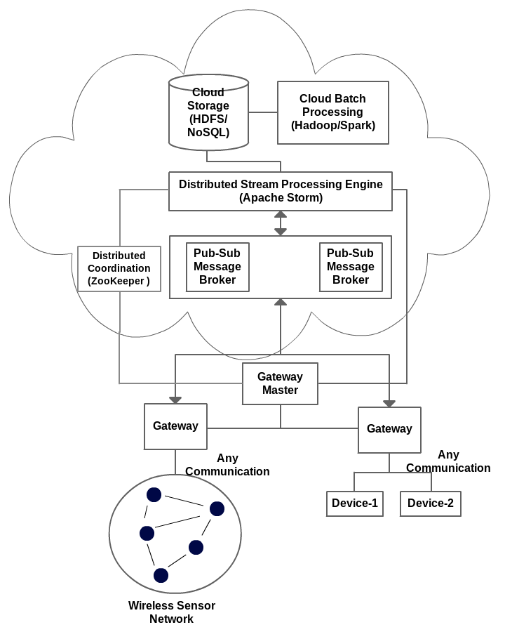

The generic architecture for connecting the IoT devices to cloud has being much discussed in the literature. These reference architectures consist of a distributed set of nodes to collect the data from the devices (Gateways) and a messaging layer to transmit this data to cloud services. The data is transformed and processed in the cloud both in real time and after storage. The main source of data can be abstracted as Wireless Sensor Networks. The wireless sensor networks (WSN) and IoT devices are connected to gateways. These gateways relay the data generated by the WSNs and devices to the Cloud Services using Publish-Subscribe messaging.
<<<<<<< HEAD Figure shows the architecture of our IoTCloud platform which is similar to the proposed architecture in the literature. One key difference is the introduction of the Gateway master to manage the different gateways connected to the system. The data generated by the devices is being considered as an event stream. The events are published to a message broker layer which supports the publish-subscribe messaging. In the cloud a distributed stream processing engine is listening for the events from the message broker layer. The event streams are passed through this distributed stream processing layer before they are being stored for further analytics. Real time analytics of the data is done at the distributed stream processing layer. The data can be stored in a traditional database, distributed file system or a NoSQL databases. ======= Above figure shows the architecture of our IoTCloud platform which is similar to the proposed architecture in the literature. One key difference is the introduction of the Gateway master to manage the different gateways connected to the system. The data generated by the devices is being considered as an event stream. The events are published to a message broker layer which supports the publish-subscribe messaging. In the cloud a distributed stream processing engine is listening for the events from the message broker layer. The event streams are passed through this distributed stream processing layer before they are being stored for further analytics. Real time analytics of the data is done at the distributed stream processing layer. The data can be stored in a traditional database, distributed file system or a NoSQL databases. >>>>>>> 830bb81d8717ef1fcf35a4f31ae82ff1be544dc7 The publish-subscribe messaging system is pluggable at the Gateway and Cloud Processing layers allowing the applications to use the most suitable message semantics.
The gateway host the user code to communicate with the devices and WSNs connected. The communication can include both data retrieval and control. A single such code can connect multiple devices i.e wireless sensor network or a single device to the system. Each gateway can define multiple communication mechanisms defined to be used by the deployed devices. The devices can choose these communication mechanisms according to their preference. There can be hundreds of gateways in a deployment. Each gateway has a RPC style service to receive the control information from the master.
We mainly use publish subscribe based messaging for sending the data to the cloud services The architecture is not limited to publish subscribe and can utilize other messaging paradigms as well. We have implemented connectors for popular open source brokers such as ActiveMQ, Kafka, Kestrel and RabbitMQ.
The gateway master keeps track of the gateways and the application deployed in the gateways. The client applications wishing to communicate with the specific devices/WSNs should first contact the master to get the required information such as the broker addresses, topics. The master is designed keeping in mind to handle the Gateway failures and deployed application failures although these features are not implemented at this moment.
The primary processing is done using a distributed stream processing engine. The data is considered as streams of events. The data can be filtered, processed in parallel at this layer. After the real time processing is done commands can be sent to the devices in real time using the message broker layer. If it is required to store the data for further analysis and archive purposes a cloud storage system can be used.
Cloud storage can be a traditional database, a NoSQL database or a distributed file system. The data storage requirements are decided based on the application and the required batch processing after storage.
If further analysis is required, a cloud based batch processing system like Hadoop, …. can be used.